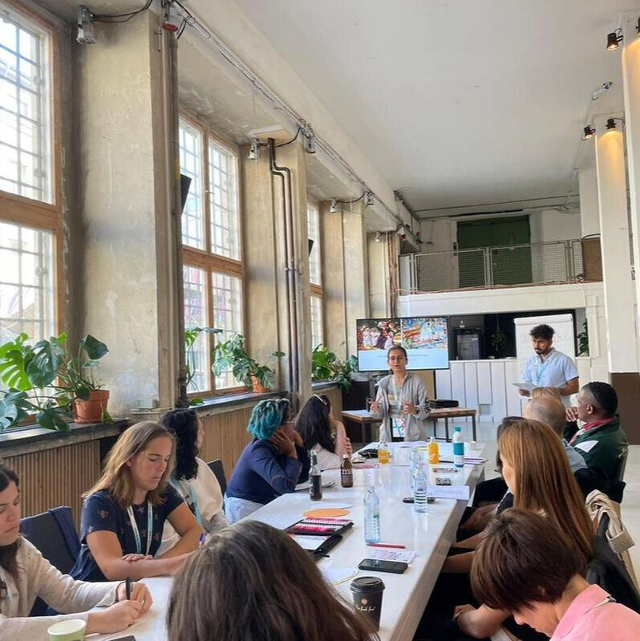
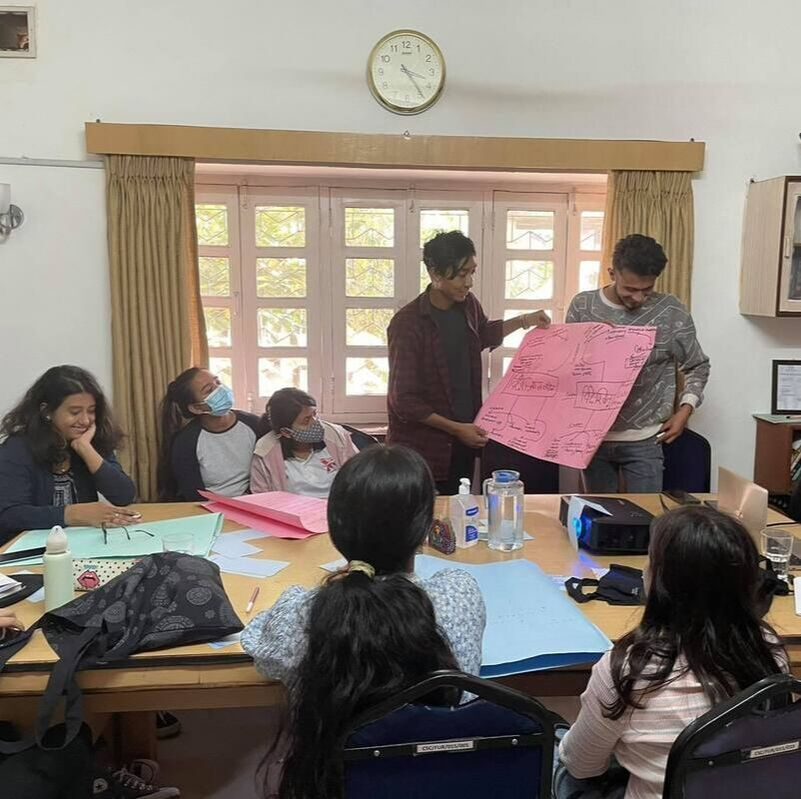
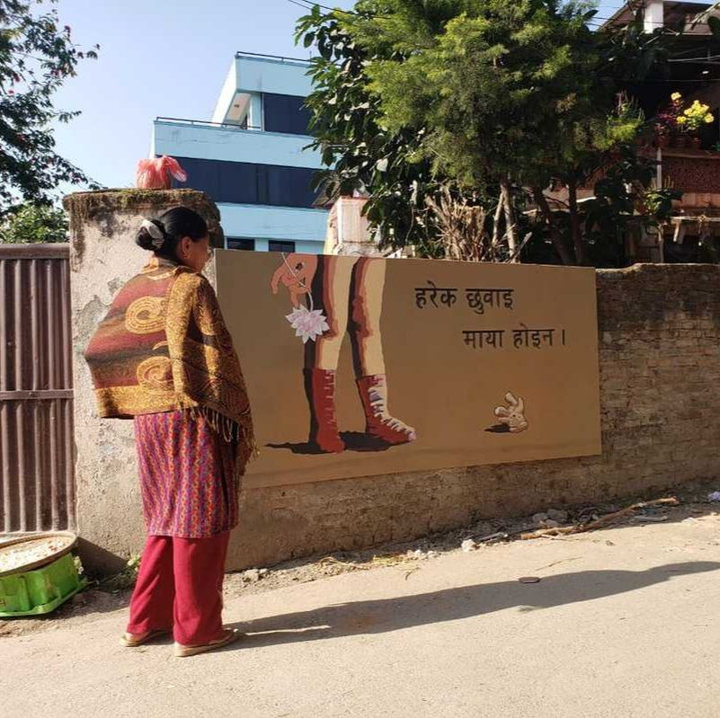
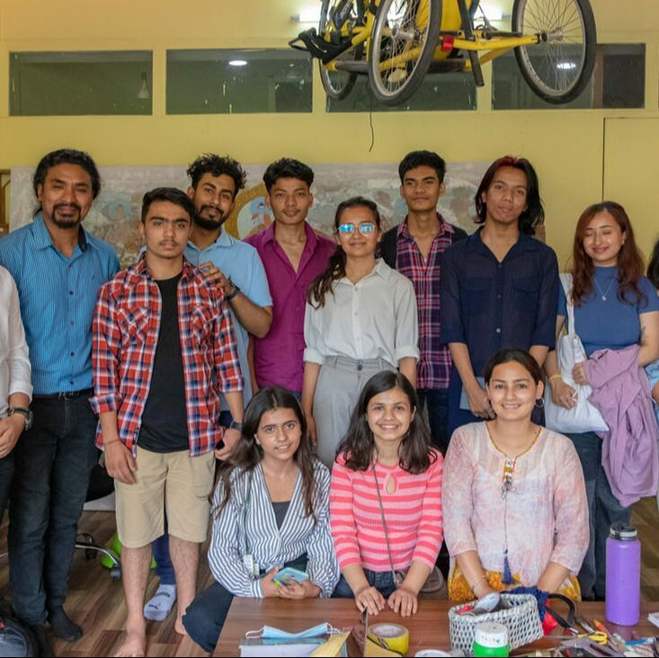

Artivism Workshop
Freedom Studio, through Artivism Workshop, puts an effort to recognize and explore art inside every activist and activism inside every artist. The 'Artivism Workshop' is targeted at artists, activists, and community workers. It introduces them to theories, tools, and techniques of artivism, engages them in creating artivism content, and develops action plans for integrating art into their activism work. Through this workshop, Freedom Studio aims to harness the critical imagination of participants to question socio-political injustice existing in the community and design events and creative strategies to contribute towards more just and peaceful societies.
Objectives
- To equip artists and activists with the theories, tools, and techniques of artistic activism.
- To empower participants in integrating art and activism in their actions and movements.
- To create a strong network of artists and activists and expand civic space.
‘Artivism: A creative form of social and political expression’ – Berlin
AArtivism is a term that describes a form of creative expression that combines art and activism. Artivism uses art as a tool for social and political change by raising awareness, challenging cultural norms, and inspiring action. Artivism can take many forms, including street art, graffiti, murals, performance art, music, theatre, and photography. Artivists may use their art to draw attention to inspire people to take action and make positive changes in their communities. Art can be a powerful form of expression, and artists apply their creativity to generate messages that leave an impact on the audience.
Artivism workshop – Sainamaina Rural Municipality, Rupandehi
Artivism for PSEA – Kathmandu

AArtivism is a term that describes a form of creative expression that combines art and activism. Artivism uses art as a tool for social and political change by raising awareness, challenging cultural norms, and inspiring action. The workshop titled 'Artivism for Democracy' is one of the workshops Freedom Studio has been working on. 22 young emerging artists and activists were invited to participate in this workshop to know and understand the power of activism through art. The workshop introduced theories, tools, and techniques of artivism. The participants also took part in an art-making session where they created unique art pieces to reflect their feelings as activists. Two of the participants in this workshop choose to portray their emotions through writing, whereas the other participants chose to express themselves via drawing & painting. The program motivated young artists and activists to use the power of art to express how they felt about Democracy Day. The workshop established a space for connection with the FS and for collaboration with young artists and activists.
‘From Protests to Painting’ – Guatemala
Art for Inclusive Election – Kathmandu
Artivism for Democracy – Kathmandu
This event is divided into three main sessions, the first of which provides knowledge on inclusivity as a democratic election principle and uses art to reflect, raise awareness, and demand non-discrimination and equal suffrage. In the second part of the activity, young people are involved in creating a variety of artistic mediums, including but not limited to paintings, songs, videography, etc. Participants share their completed artwork and experiences at the event in the concluding part.